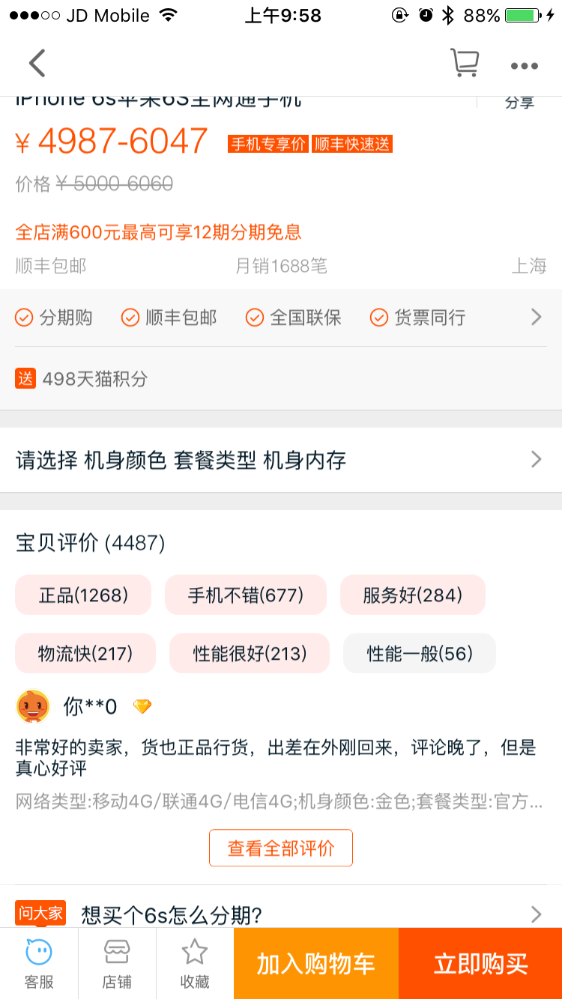

iOS开发-navigationBar的透明度处理
文档更新说明：
• 2016年02月25日 v1.0 初稿
1、背景

我们在使用app的时候，经常看到一些app的导航栏的透明度是可以变化的。比如说淘宝，在商品界面，你越往上滑，导航栏的透明度就会降低，那么这种效果是怎么实现的呢？效果图如上.
实现方案
很多人看到这个效果，都觉得很简单，确实，这个效果看起来是蛮简单的。这里我想到的方案主要是下面的四个：
- 方案1：可能你会认为设置导航栏的透明度就可以解决了。不过设置导航栏透明度是会把导航栏上面那几个按钮一并隐藏的，再看看淘宝，那几个按钮可是一直都在啊。还有就是目前iOS中，设置导航栏透明度是有问题的，这个不上今天的主题，下次有机会再来讨论。
- 方案2：这个方案要看具体项目了，项目中如果使用的是纯色来作为导航栏背景的话，我们可以调整导航栏背景颜色的透明度达到这个效果。但是非常不幸的是，设置这个属性是没有用的。这个属性只能设置两个状态，一个是有颜色的，一个是没有颜色的（clearColor）。
- 方案3：看完上面两个方案，也许你会在心中默念“尼玛，这不坑爹吗？两个方案一个不能实现，一个只能用在纯色的导航栏上面，我们公司的美工坑爹的要我们用图片作为导航栏背景！！！”。先别急，待我慢慢说来。从上面方案二可以想到一种思路，就是先把背景图片的透明度设置好，再把这个图片设置成导航栏的背景图片。不过，图片是没有alpha这个属性的，我们可以通过画布的方式来实现这个透明度的改变，具体代码在下面给出。
- 方案4：这个方案是一个做假象的做法，先给导航栏设置一个透明的背景，然后在创建一个和导航栏一样大小的view，把这个view insert到导航栏的0号位置中，这样可以保证我们创建的view在导航栏的最底层，不影响上层的按钮显示。
相关代码
光说不练假把式，方案说完了，不去实现一下就没意思了。
方案1：这个方案没什么技术含量，直接在scrollView的代理中写一句话就可以了。不过要注意这个方案的缺陷。
- (void)scrollViewDidScroll:(UIScrollView *)scrollView {
//改变透明度
self.navigationController.navigationBar.alpha = scrollView.contentOffset.y / 200.0f;
}
方案2：暂时未实现，实现了再来贴代码。
方案3：这个方案主要就是生成透明度变化的图片。
- 1、首先，设置导航栏默认背景图片。
- (void)setNavigation {
//设置导航栏背景颜色
UIImage *navigationBarBackgroundImage = [UIImage imageFromColor:[UIColor redColor] imageSize:CGSizeMake(WIDTH, 64)];
navigationBarBackgroundImage = [UIImage imageByApplyingAlpha:0 image:navigationBarBackgroundImage];
[self.navigationController.navigationBar setBackgroundImage:navigationBarBackgroundImage forBarMetrics:UIBarMetricsDefault];
self.automaticallyAdjustsScrollViewInsets = NO;
}
- 2、实现代理，在代理中改变图片透明度。
#pragma mark scrollViewDelegate
- (void)scrollViewDidScroll:(UIScrollView *)scrollView {
//设置导航栏背景透明度
CGFloat alpha = (scrollView.contentOffset.y / 200.0f);
alpha = alpha < 0 ? 0 : alpha > 1 ? 1 : alpha;
UIImage *navigationBarBackgroundImage = [UIImage imageFromColor:[UIColor redColor] imageSize:CGSizeMake(WIDTH, 64)];
navigationBarBackgroundImage = [UIImage imageByApplyingAlpha:alpha image:navigationBarBackgroundImage];
[self.navigationController.navigationBar setBackgroundImage:navigationBarBackgroundImage forBarMetrics:UIBarMetricsDefault];
}
功能就可以实现了。还有两段关键代码。生成纯色图片和改变图片透明度的。
- 生成纯色图片
/**
* 通过颜色生成纯色图片
*
* @param color 颜色
* @param size 图片大小
*
* @return 生成的图片
*/
+ (UIImage *)imageFromColor:(UIColor *)color imageSize:(CGSize)size {
CGRect rect = CGRectMake(0, 0, size.width, size.height);
UIGraphicsBeginImageContext(size);
CGContextRef context = UIGraphicsGetCurrentContext();
CGContextSetFillColorWithColor(context, [color CGColor]);
CGContextFillRect(context, rect);
UIImage *img = UIGraphicsGetImageFromCurrentImageContext();
UIGraphicsEndImageContext(); return img;
}
- 改变图片透明度
/**
* 改变图片透明度
*
* @param alpha 透明度
* @param image 图片
*
* @return 改变之后的图片
*/
+ (UIImage *)imageByApplyingAlpha:(CGFloat)alpha image:(UIImage*)image {
UIGraphicsBeginImageContextWithOptions(image.size, NO, 0.0f);
CGContextRef ctx = UIGraphicsGetCurrentContext();
CGRect area = CGRectMake(0, 0, image.size.width, image.size.height);
CGContextScaleCTM(ctx, 1, -1);
CGContextTranslateCTM(ctx, 0, -area.size.height);
CGContextSetBlendMode(ctx, kCGBlendModeMultiply);
CGContextSetAlpha(ctx, alpha);
CGContextDrawImage(ctx, area, image.CGImage);
UIImage *newImage = UIGraphicsGetImageFromCurrentImageContext();
UIGraphicsEndImageContext();
return newImage;
}
方案4：这个方案关键点是找到navigaitonbar的底层图片，然后把我们的view插入进去。
- 1、首先，把我们的view直接插入到navigaitonbar的0号位置。
#pragma mark 设置导航栏
- (void)setNavigation {
//设置导航栏背景颜色
UIImage *navigationBarBackgroundImage = [UIImage imageFromColor:[UIColor redColor] imageSize:CGSizeMake(WIDTH, 64)];
navigationBarBackgroundImage = [UIImage imageByApplyingAlpha:0 image:navigationBarBackgroundImage];
[self.navigationController.navigationBar setBackgroundImage:navigationBarBackgroundImage forBarMetrics:UIBarMetricsDefault];
self.automaticallyAdjustsScrollViewInsets = NO;
//创建一个假象背景view
UIView *navigationBarBackgroundView = [[UIView alloc] initWithFrame:CGRectMake(0, -20, WIDTH, 64)];
navigationBarBackgroundView.alpha = 0;
navigationBarBackgroundView.backgroundColor = [UIColor orangeColor];
//插入
[self.navigationController.navigationBar insertSubview:navigationBarBackgroundView atIndex:0];
}
- 2、然后就和上面的方案一样了，在代理中改变这个view的透明度.
#pragma mark scrollViewDelegate
- (void)scrollViewDidScroll:(UIScrollView *)scrollView {
//设置导航栏背景透明度
CGFloat alpha = (scrollView.contentOffset.y / 300.0f);
alpha = alpha < 0 ? 0 : alpha > 1 ? 1 : alpha;
UIView *navigationBarBackgroundView = self.navigationController.navigationBar.subviews[0];
navigationBarBackgroundView.alpha = alpha;
}
说明：这个方案我觉得最好是自己写一个navigationController的继承类，在继承类中实现这个功能。
项目代码
项目完整代码已经上传到github，有兴趣的可以下载下来看看效果，也欢迎大家指出其中的错误，如果你有更好的方案也希望能告诉我~
项目地址：https://github.com/fengqiangboy/iOS-NavigationBarBackgroundAlpha
本文已在版权印备案，如需转载请访问版权印。